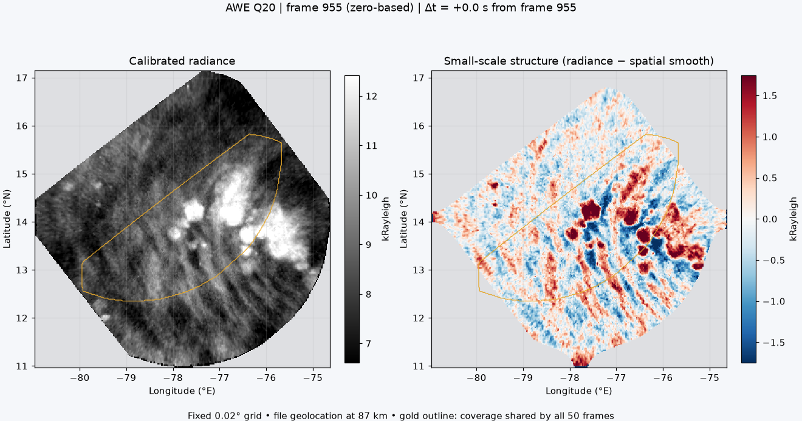

Open motion-based slow / fast layer separation →
Frames 930–979 (zero-based), centered near 955. About 54 seconds of observations.

Both panels use the same fixed 0.02° map grid and fixed color scales throughout. Gold outlines the area observed in all 50 frames. Gray is outside the valid footprint. The right panel subtracts a Gaussian spatial smooth (σ = 0.2°, roughly 22 km north–south); it does not register or shift the images.
Coordinates come directly from the file’s 87 km OH-layer geolocation. Motion on this map is apparent motion relative to that reference surface; it alone does not establish parallax or a feature’s altitude. Genuine scene evolution and geolocation errors can also produce motion. Playback wraps from the last frame to the first.
Animated GIF · Projected numerical data · Processing metadata